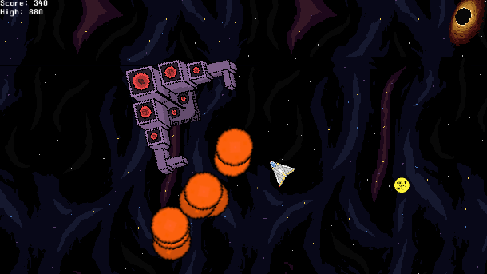

Bilal Saqib is currently a Junior at MSU pursuing game design. He has always had a fascination with video games and creating a world for people to enjoy. Eventually he wants to have his own company! Until then, he is marching towards that future. He is currently working on multiple projects. Some of those projects are solo endeavors while others are in a team. One of those projects is with 40 other game design students to create a video game which is coming out soon!
He is also very involved outside of school. Here is a list of clubs he is in.
The most recent project that he has finished was a 2d shooting game for CAS 117. This game included multiple stages, power ups, and enemies!
